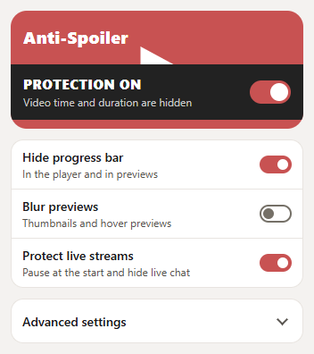
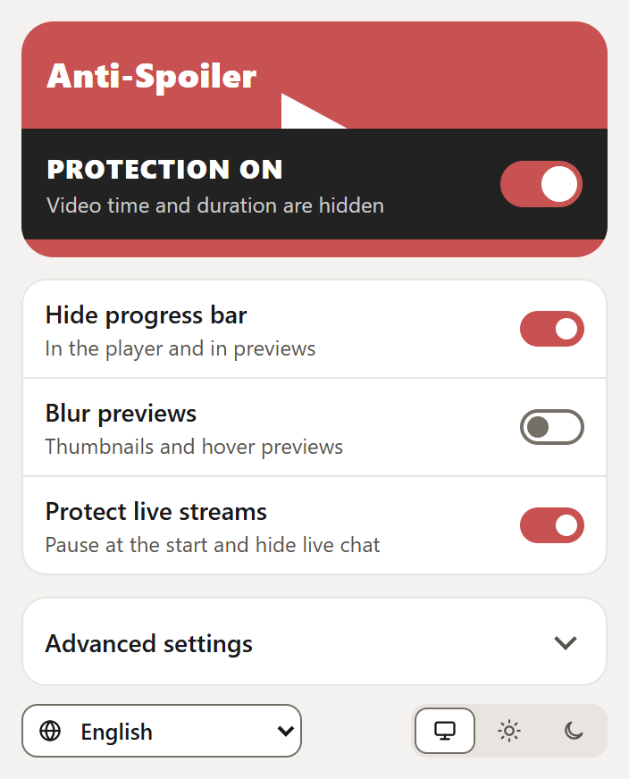
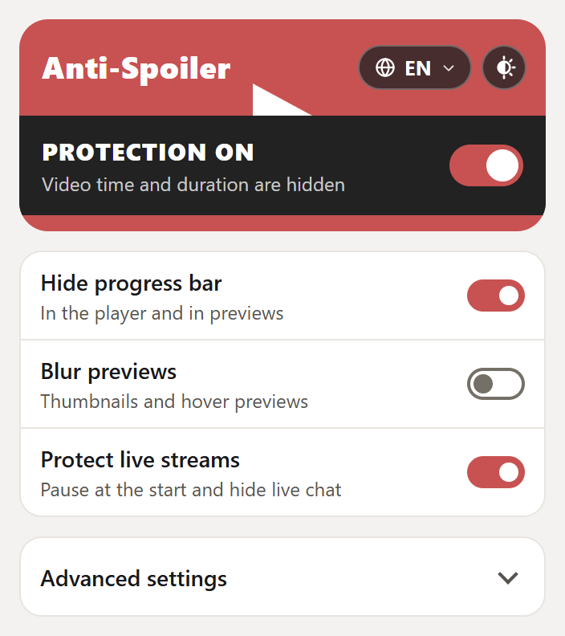
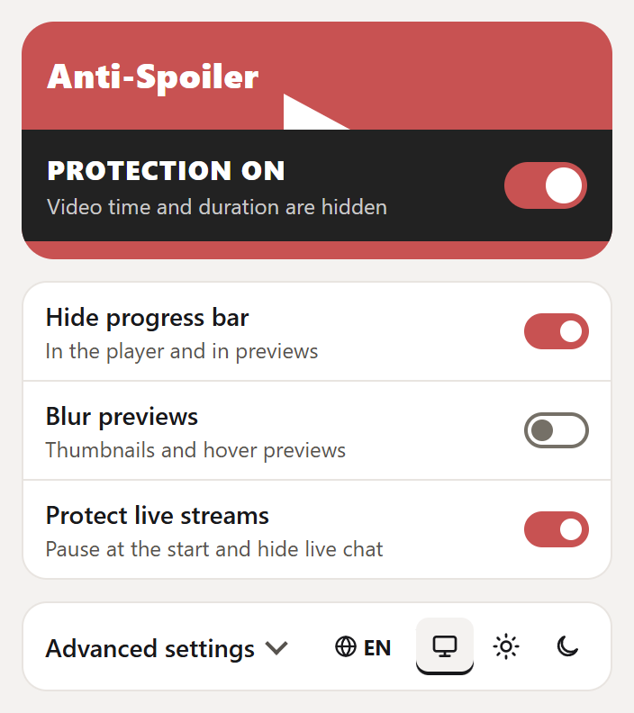
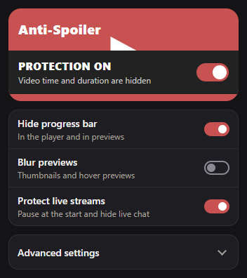
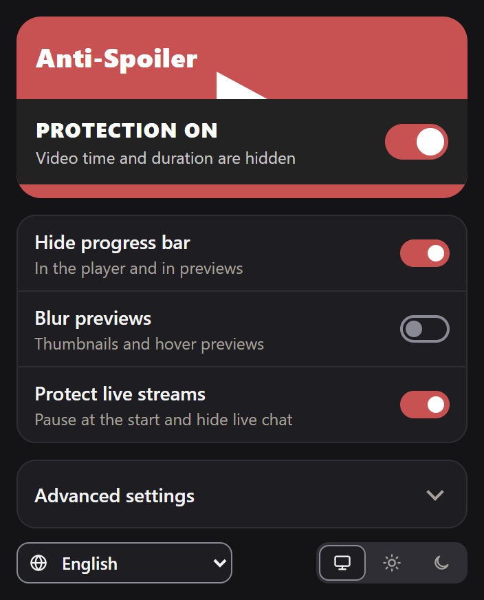
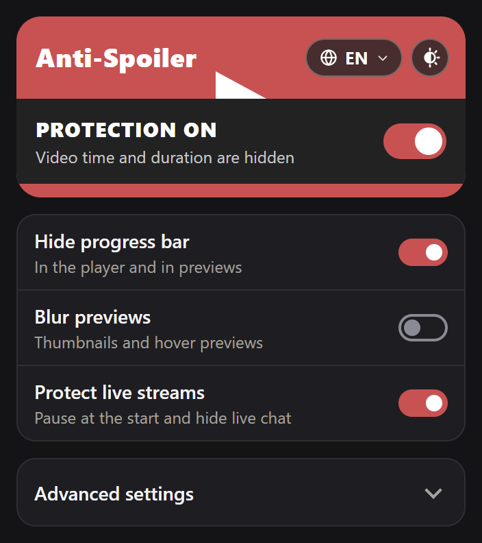
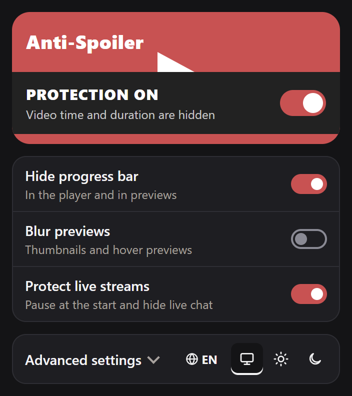

Попап Anti-Spoiler: язык и тема под рукой
Светлая тема сверху, тёмная снизу. Защита включена, «Дополнительно» свёрнуто. Тема во всех вариантах — «Авто».
СейчасЯзык спрятан в «Дополнительно», переключателя темы нет.
A. Нижняя панельСтрока под карточками: язык и тема, +40 px. Выбор Argon.
B. Значки в шапкеДве таблетки в красной шапке, высота не растёт.
C. В строке „Дополнительно“Язык и тема справа в той же строке. Выбор Codex.



